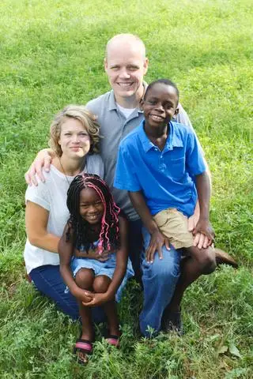

FARGO — No finely tuned strategy came into play at its beginnings. Rather, a need became apparent during a local mother’s mission trip to Mexico, and with her heart swelling at the sight of children desperate for a loving home, she jumped in to help.
Though the connection with Mexico since has been severed due in part to government blocks, she says, 12 years later, the work of creating families has continued in other areas of the country and world.
“My mom has always maintained that as long as we get applications, that the Lord wants us to keep doing this,” Ness says.

During the agency’s founding, Ness was finishing a degree in social work, and seemed fit to lead the operation. She’d had visions of working in the adoption arena ever since age 9 while witnessing the adoption process of one of her 10 adopted siblings.
“I remember looking at the pictures on the wall of the different families (wanting to adopt) and thinking, ‘That would be a cool job, connecting kids and families together.’ ”
Along with her older biological brother, the Twedt family includes 12 children, with placements having come domestically, internationally and from within the foster-care system.
In 2015, this small, Christian-based agency helped place 34 children into 26 families — 20 domestic, 11 international and three from foster care.
“For a smaller agency, that’s a pretty good number,” Ness says, noting that less than 2 percent of unplanned pregnancies end in adoption.
Those who choose God’s Children to walk through the process with them, both birth parents and adoptive parents, make a statement of faith and procure a pastoral recommendation.
“So much of our philosophy has to do with faith,” Ness explains. “We can do our paperwork as well as we can, but ultimately we want the adoption to be just as clear as when the Lord places a baby in the womb, so he places this child in your home.”
When Liz Tangquist and her husband, Mark, of Moorhead, began the adoption process that ultimately connected them with their daughter, Vivia, God’s Children came to the fore, and the faith component proved crucial.
“Lindsey definitely made it clear that they would be partnering with us and praying for us in our placement,” Liz says. “It just felt really good to be able to talk about those spiritual things, and for her to understand where we were coming from. She was praying just as much for the child and birth mom as for us.”
Despite some of the more trying aspects, like paperwork and waiting, Liz says, she felt warmth and caring from Ness throughout. “It was a really beautiful experience to have that encouragement, along with the Christian component.”
“That’s what makes this agency unique,” adds Amy Twedt, “that its director has lived through adoption, adoption crises, challenges and adoption rejoices, and everything in between.”
Twedt says the ministry itself has been laid out in Scripture.
“I think the Bible is clear that we’re all charged to care for the orphans and widows,” she says. “Adoption is the front line, but there’s a whole lot that you can do as a family to support the orphans and widow ministry,” including foster care and orphanage support. “I would encourage Christian families to be involved in the ministry, in whatever way that the Lord deems it.”
Lindsey Ness says the faith parallels in this ministry are profound.
“God gave us his son, and this person (birth parent) gave us their son or daughter,” she says. “Obviously the Lord giving his son to die for me is huge in my life, and this person is allowing me to parent their child? It gives me goosebumps.”
Faith also can be a healing balm to adopted children coming from traumatic situations, she adds.
“To be able to offer them to come into our family unconditionally just like the Lord does to us and to say, ‘You inherit all of this, our name and our family. Obviously you can choose to reject that gift but we will be here for you,’ ” she says. “I can’t see that playing out in any better example than in what the Lord does when he adopts us.”
Ness credits her parents for giving her an expansive heart. She says that whenever a family meeting was called during her childhood, the kids knew another adoption was imminent.
“We never had family meetings outside of adoption,” she says. “And we’d usually have to put a camper or something else up for sale to pay for it.”
She and her siblings agree that despite the frequent chaos of it all, the chances at additional love in the form of another sibling has been immeasurable.
“If the Lord is bringing you to something and it’s covered in prayer, the alternative is being in the belly of a whale,” Ness remarks. “Think of the opportunities and blessings my family would have missed out on if (my parents) had said ‘No’ even once.”

Twedt says her own path has been remarkably fulfilling. “It’s blessed me and stretched me and I’ve rejoiced in it. You learn to rejoice in everything, really, and that’s a good thing to learn in life.”
[For the sake of having a repository for my newspaper columns and articles, I reprint them here, with permission, a week after their run date. The preceding ran in The Forum newspaper on May 14, 2016.]